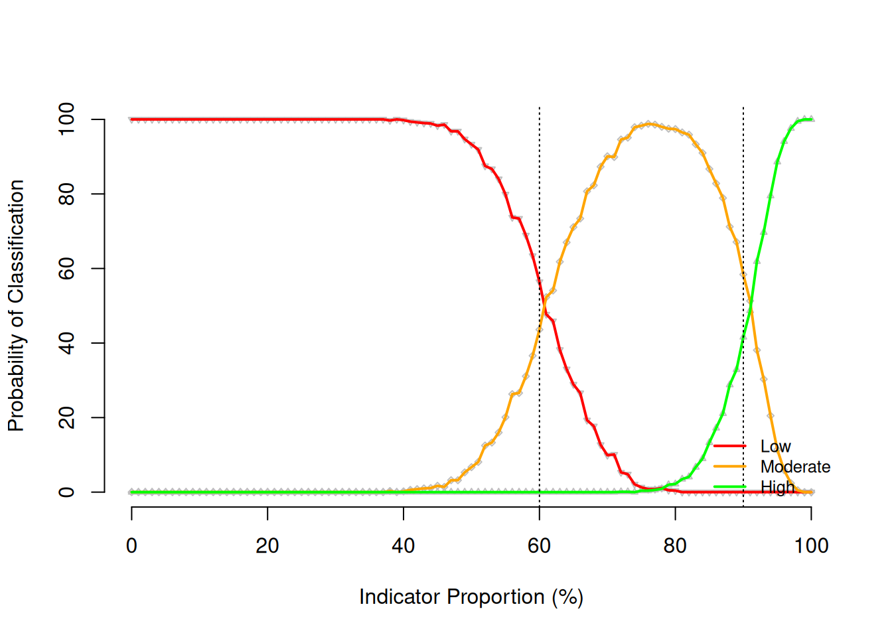

get_sample_n(N = 600, dLower = 0.5, dUpper = 0.8)Our software development team is pleased to announce that {sleacr}, an R package for Simplified Lot Quality Assurance Sampling Evaluation of Access and Coverage (SLEAC), has been accepted to the Comprehensive R Archive Network (CRAN) today!
What does the package do?
The {sleacr} package provides functions that facilitate the design, sampling, data collection, and data analysis of a SLEAC survey. The current version of the {sleacr} package provides the following:
Functions to calculate the sample size needed for a SLEAC survey;
Functions to draw a stage 1 sample for a SLEAC survey;
Functions to classify coverage;
Functions to determine the performance of chosen classifier cut-offs for analysis of SLEAC survey data;
Functions to estimate coverage over wide areas; and,
Functions to test for coverage homogeneity across multiple surveys over wide areas.
Lot quality assurance sampling frame
To setup an LQAS sampling frame, a target sample size is first estimated. For example, if the survey area has an estimated population of about 600 severe acute malnourished (SAM) children and you want to assess whether coverage is reaching at least 50%, the sample size can be calculated as follows:
which gives an LQAS sampling plan list with values for the target minimum sample size (n), the decision rule (d), the observed alpha error (alpha), and the observed beta error (beta).
$n
[1] 19
$d
[1] 12
$alpha
[1] 0.06446194
$beta
[1] 0.08014249In this sampling plan, a target minimum sample size of 19 SAM cases should be aimed for with a decision rule of more than 12 SAM cases covered to determine whether programme coverage is at least 50% with alpha and beta errors no more than 10%. The alpha and beta errors requirement is set at no more than 10% by default. This can be made more precise by setting alpha and beta errors less than 10%.
There are contexts where survey data has already been collected and the sample is less than what was aimed for based on the original sampling frame. The get_sample_d() function is used to determine the error levels of the achieved sample size. For example, if the survey described above only achieved a sample size of 16, the get_sample_d() function can be used as follows:
get_sample_d(N = 600, n = 16, dLower = 0.5, dUpper = 0.8)which gives an alternative LQAS sampling plan based on the achieved sample size.
$n
[1] 16
$d
[1] 10
$alpha
[1] 0.07890285
$beta
[1] 0.1019738In this updated sampling plan, the decision rule is now more than 10 SAM cases but with higher alpha and beta errors. Note that the beta error is now slightly higher than 10%.
Stage 1 sample
The first stage sample of a SLEAC survey is a systematic spatial sample. Two methods can be used and both methods take the sample from all parts of the survey area: the list-based method and the map-based method. The {sleacr} package currently supports the implementation of the list-based method.
In the list-based method, communities to be sampled are selected systematically from a complete list of communities in the survey area. This list of communities should sorted by one or more non-overlapping spatial factors such as district and subdistricts within districts. The village_list dataset is an example of such a list.
village_list# A tibble: 1,001 × 4
id chiefdom section village
<dbl> <chr> <chr> <chr>
1 1 Badjia Damia Ngelehun
2 2 Badjia Damia Gondama
3 3 Badjia Damia Penjama
4 4 Badjia Damia Jawe
5 5 Badjia Damia Dambala
6 6 Badjia Fallay Bumpewo
7 7 Badjia Fallay Pelewahun
8 8 Badjia Fallay Pendembu
9 9 Badjia Kpallay Jokibu
10 10 Badjia Kpallay Kpaku
# ℹ 991 more rowsThe get_sampling_list() function implements the list-based sampling method. For example, if 40 clusters/villages are needed to be sampled to find the 19 SAM cases calculated earlier, a sampling list can be created as follows:
get_sampling_list(village_list, 40)which provides the following sampling list:
| id | chiefdom | section | village |
|---|---|---|---|
| 20 | Badjia | Njargbahun | Kpetema |
| 45 | Bagbe | Jongo | Yengema |
| 70 | Bagbe | Samawa | Baiama |
| 95 | Bagbo | Jimmi | Kpawama |
| 120 | Bagbo | Mano | Dandabu |
| 145 | Baoma | Bambawo | Kenemawo |
| 170 | Baoma | Fallay | Gbandi |
| 195 | Baoma | Mawojeh | Ngelahun |
| 220 | Baoma | Upper Pataloo | Yakaji |
| 245 | Bumpe Ngao | Bumpe | Waiima |
| 270 | Bumpe Ngao | Foya | Bobobu |
| 295 | Bumpe Ngao | Bongo | Belebu |
| 320 | Bumpe Ngao | Serabu | Nyahagoihun |
| 345 | Bumpe Ngao | Taninahun | Kpetewoma |
| 370 | Bumpe Ngao | Taninahun | Mokebi |
| 395 | Bumpe Ngao | Taninahun | Ngiegboiya |
| 420 | Gbo | Gbo | Kotumahun Mavi |
| 445 | Gbo | Nyawa | Foya |
| 470 | Jaiama Bongor | Lower Niawa | Baraka |
| 495 | Jaiama Bongor | Tongowa | Talia |
| 520 | Jaiama Bongor | Upper Niawa | Nyeyama |
| 545 | Kakua | Kpandobu | Fabaina |
| 570 | Kakua | Nyallay | Jandama |
| 595 | Kakua | Sewa | Kenedeyama |
| 620 | Komboya | Kemoh | Gumahun |
| 645 | Komboya | Mangaru | Sengbehun |
| 670 | Lugbu | Kargbevu | Momandu |
| 695 | Niawa Lenga | Lower Niawa | Luawa |
| 720 | Niawa Lenga | Yalenga | Dandabu |
| 745 | Selenga | Mokpendeh | Jolu |
| 770 | Tikonko | Ngolamajie | Baoma (Geyewoma) |
| 795 | Tikonko | Seiwa | Gendema |
| 820 | Tikonko | Seiwa | Towama |
| 845 | Tikonko | Seiwa | Kpawugbahun |
| 870 | Valunia | Deilenga | Hendogboma |
| 895 | Valunia | Lower Kargoi | Gombu |
| 920 | Valunia | Lunia | Kpetema |
| 945 | Valunia | Manyeh | Malema |
| 970 | Valunia | Yarlenga | Dassamu |
| 995 | Wonde | Manyeh | Kigbema |
Classifying coverage
With data collected from a SLEAC survey, the lqas_classify_coverage() function is used to classify coverage. The {sleacr} package comes with the survey_data dataset from a national SLEAC survey conducted in Sierra Leone.
survey_data# A tibble: 14 × 7
country province district cases_in cases_out rec_in cases_total
<chr> <chr> <chr> <int> <int> <int> <int>
1 Sierra Leone Northern Bombali 4 26 6 30
2 Sierra Leone Northern Koinadugu 0 32 6 32
3 Sierra Leone Northern Kambia 0 28 0 28
4 Sierra Leone Northern Port Loko 2 28 0 30
5 Sierra Leone Northern Tonkolili 1 27 5 28
6 Sierra Leone Eastern Kono 2 14 3 16
7 Sierra Leone Eastern Kailahun 4 30 3 34
8 Sierra Leone Eastern Kenema 8 26 4 34
9 Sierra Leone Southern Pujehun 6 21 1 27
10 Sierra Leone Southern Bo 6 16 8 22
11 Sierra Leone Southern Bonthe 7 34 2 41
12 Sierra Leone Southern Moyamba 6 34 0 40
13 Sierra Leone Western Area Western Area… 6 40 5 46
14 Sierra Leone Western Area Western Area… 2 18 0 20Using this dataset, per district coverage classifications can be calculated as follows:
with(
survey_data,
lqas_classify(
cases_in = cases_in, cases_out = cases_out, rec_in = rec_in
)
)which outputs the following results:
cf tc
1 0 1
2 0 0
3 0 0
4 0 0
5 0 0
6 0 1
7 0 0
8 1 1
9 1 1
10 1 1
11 0 0
12 0 0
13 0 0
14 0 0The function provides estimates for case-finding effectiveness and for treatment coverage as a data.frame object.
Assessing classifier performance
It is useful to be able to assess the performance of the classifier chosen for a SLEAC survey. For example, in the context presented above of an area with a population of 600, a sample size of 40 and a 60% and 90% threshold classifier, the performance of this classifier can be assessed by first simulating a population and then determining the classification probabilities of the chosen classifier on this population.
## Simulate population ----
lqas_sim_pop <- lqas_simulate_test(
pop = 600, n = 40, dLower = 0.6, dUpper = 0.9
)
## Get classification probabilities ----
lqas_get_class_prob(lqas_sim_pop) Low : 0.9555
Moderate : 0.836
High : 0.8379
Overall : 0.9079
Gross misclassification : 0This diagnostic test can also be plotted.
plot(lqas_sim_pop)
Estimating coverage over wide areas
When SLEAC is implemented in several service delivery units, it is also possible to estimate an overall coverage across these service delivery units. For example, using the survey_data dataset from a national SLEAC survey conducted in Sierra Leone, an overall coverage estimate can be calculated. For this, additional information on the total population for each service delivery unit surveyed will be needed. For the Sierra Leone example, the pop_data dataset gives the population for each district in Sierra Leone.
pop_data# A tibble: 14 × 2
district pop
<chr> <dbl>
1 Kailahun 526379
2 Kenema 609891
3 Kono 506100
4 Bombali 606544
5 Kambia 345474
6 Koinadugu 409372
7 Port Loko 615376
8 Tonkolili 531435
9 Bo 575478
10 Bonthe 200781
11 Moyamba 318588
12 Pujehun 346461
13 Western Area Rural 444270
14 Western Area Urban 1055964The overall coverage estimate can be calculated as follows:
pop_df <- pop_data |>
setNames(nm = c("strata", "pop"))
estimate_coverage_overall(
survey_data, pop_data, strata = "district", u5 = 0.177, p = 0.01
)which gives the following results:
$cf
$cf$estimate
[1] 0.1257481
$cf$ci
[1] 0.09247579 0.15902045
$tc
$tc$estimate
[1] 0.1706466
$tc$ci
[1] 0.1371647 0.2041284Testing coverage homogeneity
When estimating coverage across multiple surveys over wide areas, it is good practice to assess whether coverage across each of the service delivery units is homogenous. The function check_coverage_homogeneity() is used for this purpose:
check_coverage_homogeneity(survey_data)which results in the following output:
ℹ Case-finding effectiveness across 14 surveys is not patchy.! Treatment coverage across 14 surveys is patchy.$cf
$cf$statistic
[1] 20.1292
$cf$df
[1] 13
$cf$p
[1] 0.09203514
$tc
$tc$statistic
[1] 33.10622
$tc$df
[1] 13
$tc$p
[1] 0.001642536In this example, case-finding effectiveness is homogeneous while treatment coverage is patchy.
Read more
You can read more about the {sleacr} package from its website.
Citation
If you use the {sleacr} package in your work, please cite both the {sleacr} package and the authors and developers of the SQUEAC and SLEAC method.
A suggested citation for both is found below:
To cite sleacr in publications use:
Ernest Guevarra, Mark Myatt (2026). _sleacr: Simplified Lot Quality
Assurance Sampling Evaluation of Access and Coverage (SLEAC) Tools_.
doi:10.5281/zenodo.7510931 <https://doi.org/10.5281/zenodo.7510931>,
R package version 0.1.3, <https://nutriverse.io/sleacr/>.
To cite the SQUEAC and SLEAC Technical Reference in publications use:
Mark Myatt, Ernest Guevarra, Lionella Fieschi, Allison Norris, Saul
Guerrero, Lilly Schofield, Daniel Jones, Ephrem Emru, Kate Sadler
(2012). _Semi-Quantitative Evaluation of Access and Coverage
(SQUEAC)/Simplified Lot Quality Assurance Sampling Evaluation of
Access and Coverage (SLEAC) Technical Reference_. FHI 360/FANTA,
Washington, DC.
To see these entries in BibTeX format, use 'print(<citation>,
bibtex=TRUE)', 'toBibtex(.)', or set
'options(citation.bibtex.max=999)'.Contributing
We’d love to hear your feedback, bug reports, and feature requests. File issues or seek support here. If you would like to contribute to the package, please see our contributing guidelines.
This project is released with a Contributor Code of Conduct. By contributing to this project, you agree to abide by its terms.